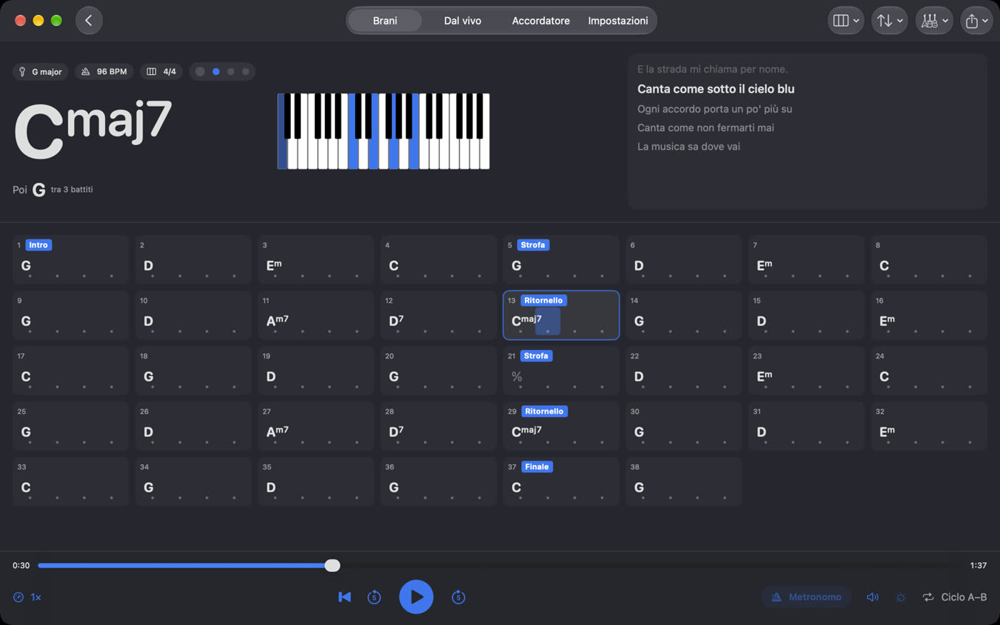

ChartHarm
Gli accordi di ogni brano, a tempo
ChartHarm ascolta un file audio e trova da solo accordi, tempo, metro, tonalità e sezioni. Li mostra in una griglia a battute che segue il brano, con il diagramma per chitarra, ukulele, mandolino, banjo o pianoforte. In più: metronomo sui battiti del brano, velocità in BPM senza cambiare il tono, ciclo A–B, trasposizione e capotasto, riconoscimento del testo e pedali Bluetooth.
Il brano analizzato si esporta per ChartLab come lead sheet, con battute, metro e sezioni, oppure come testo con gli accordi e in ChordPro. Tutto avviene sul dispositivo: l'audio non lascia mai l'iPhone, l'iPad o il Mac.

The chords of any song, in time
ChartHarm listens to an audio file and finds chords, tempo, time signature, key and sections by itself. It shows them in a bar grid that follows the song, with diagrams for guitar, ukulele, mandolin, banjo or piano. Plus: a metronome on the song's beats, tempo in BPM without changing the pitch, A–B loop, transpose and capo, lyrics recognition and Bluetooth pedals.
Export the analysed song to ChartLab as a lead sheet with bars, time signature and sections, or as text with chords and ChordPro. Everything runs on the device: the audio never leaves your iPhone, iPad or Mac.